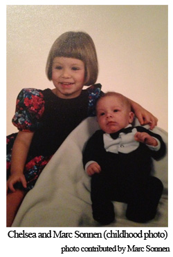
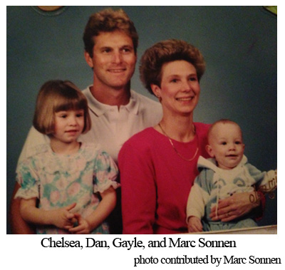
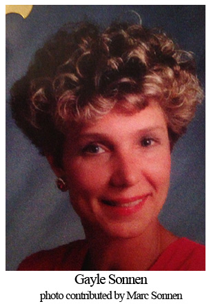
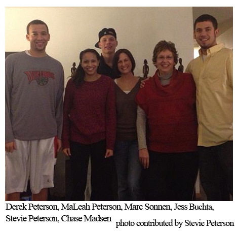
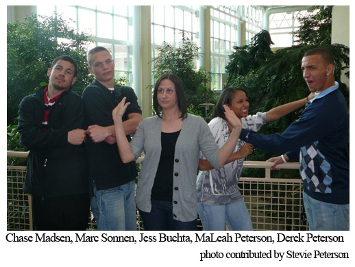
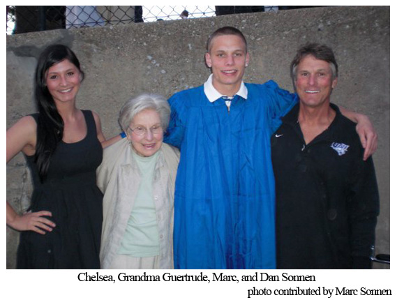

Judge him. Call him a thug. Wrap him up and put a stereotypical bow on him.
Marc Sonnen experiences it each time he walks onto the court. His Northern Iowa basketball jersey masks his torso, but the tank top reveals his inked-up shoulders and biceps.
The jeers haven’t changed in four years. “Eminem!” “Trailer trash!”
Perhaps the only difference is how the taunts are administered. Today, they often come on Twitter, where one user recently wrote, “Marc Sonnen has too many tattoos for being white.”
Even in his home of St. Paul, Minn., he can’t escape the judgment.
About a year ago, the UNI senior shooting guard sat on the sideline at a local recreation center, waiting for the next pickup basketball game. He began a conversation with a man, who complemented him on being “such a good guy” and “really respectful.”
Then Sonnen took the court. But before doing so, he discarded his shirt, revealing his tattooed body.
“He looked at me like I was completely different. That I was a thug or someone who is causing trouble,” Sonnen said. “He said, ‘What the hell did you do that for?’”
Few ever ask him. The expletives fly from the stands, punctuated by exclamation points, but never by question marks.
The assumptions lead to a conclusion that he is another Eric Devendorf, the former Syracuse player, or Chris “Birdman” Andersen.
They divert from a path that tells a story of a straight-A student, whose father says, “is an exceptional kid.” His love for his mother is the only thing that tops his passion for basketball.
When he was 10, his mother, Gayle Sonnen, died of brain cancer. She was 45.
And that’s why the hell he did that. The ink that covers his body from stomach to chest, from shoulder to shoulder, and down both arms is dedicated to the woman he only spent a decade with.
The memorial will last forever. The judgmental stares may, too. Both bring different emotions, but connect Marc even closer to his mother.
The tribute evolved over time, but it began on an October afternoon in St. Paul on a date that’s impossible for him to forget.
His sister, Chelsea Sonnen, older by three years, greeted him after school at the front door with disturbing news on Friday the 13th. Their mother suffered a seizure.

It had to be a joke.
“When you’re the younger sibling you’re always getting pranks pulled on you,” Marc said. “So I thought, I came home and I heard that, and it was a shock to me, so I thought she was lying because when you hear something like that you don’t think it’s real. As a little kid, you’re going to think you’re just messing with me.”
After some convincing, he realized it wasn’t a prank. Still, the word “seizure” didn’t mean much to a 10-year-old.
“I really didn’t know what it really meant to have a seizure and stuff like that,” Marc said. “I thought maybe she’s just sick. It didn’t click to me in my brain, because I wasn’t smart enough or mature enough to know about that.
“I thought it was just one day she had gotten sick. Later on, I realized a lot more.”

A conversation with his dad, Dan Sonnen, gave the situation its proper perspective. Gayle, was sick. At the time, the seizure consumed the family’s thoughts. But the world wasn’t done tugging at Marc and his family.
Five days later, on Oct. 18, Chelsea’s birthday, doctors discovered what caused the seizure: a brain tumor. With the diagnosis came a life expectancy of up to four months.
“Remember back to your 10-year old self, if somebody says the word cancer, it’s kind of like what?” Chelsea said. “And to be told a four-month period, that’s how much longer your mom is possibly going to be on this Earth, it’s really unfathomable. It’s something that you really can’t conceive.”
Each passing day erased more of his limited time with his mother. Not old enough to grasp the weight of the situation, the hardwood gave him a sanctuary, even then.
“He was so busy into sports, that made it a lot easier for him,” Dan said. “Because he really didn’t have any spare time, so he didn’t have to deal with any of those issues.”
Gayle Sonnen walked into the gym, pulling the attention away from the youth basketball tournament on the court and onto her appearance.
Chemotherapy drained the color out of her face and pried the strength out of her body. It tried to destroy the cancer ravaging her, but instead took the hair from her head. And with it, came stares of confusion.
“A lot of people on the sideline were staring at her like, who is this woman and why does she look so weird?” Marc said. “It just showed she didn’t care what she looked like or what people thought about her, as long as she was there watching me.”
The sight of her walking through the doors was in itself a miracle. Gayle’s condition hadn’t improved. Dan warned his son not to expect his mother to attend the game – even if it was the championship.
Neither cancer nor the looks from the crowd prevented her from experiencing her son’s shot at a title.
“Boy, when he’d see her there, you could just see what an impact it had on him,” Dan said. “It meant a lot to Gayle to see him and doing good. It’s just too bad she couldn’t see the end result.”
Marc felt sick. Chelsea joined him in the morning argument; neither wanted to go to school. Their mother laid in a bedroom with her eyes closed. She hadn’t spoken in two weeks. The cancer engulfed her brain, forcing her into a near coma state.
“They were very honest with us,” Chelsea said. “We knew at that day, it was getting very close.”
But still, she battled back.
“If you said something to her, told her you loved her and said goodbye, she’d squeeze your hand,” Dan said. “She’d still know what was going on.”

Their pleading to stay home forced them to miss the bus, so Dan drove them to school. Chelsea had Spanish and math finals. Marc needed to take a math test. He dropped off Marc first at Nokomis Elementary before driving Chelsea to Battle Creek Middle School.
“I took Chelsea and I was just driving away and I got the phone call,” Dan said.
Marc sat in fourth grade math class. He doesn’t remember the teacher. He doesn’t remember the room. He just remembers the echo of the intercom. Four months and 10 days – Feb. 23, 2001 -- after his sister told him about his mom’s seizure, the same feeling of confusion entangled Marc.
“I got a call on the intercom, ‘Marc Sonnen, could you please come to the office.’ I was thinking like, ‘I hope I didn’t do anything wrong. Am I in trouble?’”
His confusion disappeared when he entered the office. The secretary and principal were crying. His dad waited for him.
“I could just tell in my dad’s face, something was wrong,” Marc said. “He told me and it broke my heart. It was something for me to realize at the moment. I didn’t even know how to react to that. Having him there though, he kind of talked me through it and helped me out a lot.”
“He said, ‘Why did she die?’ and I said, ‘Well, Marc, I guess the way I look at it, you never know how long you’re going to live,’” Dan said. “I said, ‘You just got to live your life to the fullest.’ And Gayle did. It was tough, though.”

Stevie Peterson sat inside Kendrigan Gymnasium with her iPad. She trekked nearly four hours from her St. Paul house to the Northland College campus in Ashland, Wisc.
The journey was worth it to watch her son, Derek Peterson, play college hoops for the Bethany Lutheran Vikings.
It’s a sacrifice, though. As the women’s team at Bethany played in the matinee, the screen on her tablet flickered, displaying another game 360 miles south. UNI was in the midst of an upset win over Wichita State – its first statement win of the year.
Suddenly, the flickering images became more important than the game only feet away.
“Everybody in the stands wanted to know how Marc was doing,” Stevie said.
A crowd of about a dozen people surrounded Stevie, anticipating the Panthers’ win. The women’s game concluded, and the Bethany Lutheran men’s team took to the court.
When the students in Cedar Falls rushed the court, the celebration expanded to an otherwise quiet gym in Wisconsin.
“I said ‘They won! And Marc hit all these 3s!’ The whole stands broke out cheering,” Stevie said. “Everybody looked up because there was nothing going on in Derek’s game. They’re like ‘What is going on?’”
For those Viking fans who know Stevie, they knew what was going on. Stevie follows every one of Marc’s games and attends as many of her son’s games as she can. When they overlap, that’s when the iPad comes out.
Stevie met Marc when he was in high school. Marc and her son played at Tartan High School. As seniors they earned the honor of being named co-captains, but their bond is much deeper than that. Derek and another high school friend, Chase Madsen, share a spot in his inked tribute on his chest, signified by their initials “DMC”.

“They’re two brothers; they’ve been a part of my life,” Marc said. “They’re somebody, they’re not blood brothers, but they’re the only people I’m close like that with.”
So close, he now lives with the Petersons.
After Dan moved a couple hours north of St. Paul, Marc wanted to remain in the city. He now has a brand new remodeled room – fresh tan paint on the walls, new carpet and a tiny TV to call his own, right next to Derek’s.
“We were good, good friends and we supported each other through hard times. People passing away and stuff like that,” Derek said. “It’s just been awesome to be able have a friendship with Marc.”
The former closet turned bedroom doesn’t come with a lease or rent. It’s Marc’s to come and go as he pleases, whatever he chooses to do after college. In return, Marc voluntarily does chores around the house, including cleaning the dog poop left behind by Stevie’s three dogs.
“She reminds me a lot of my mom and what she did for us growing up,” Marc said. “No matter what, I always appreciate everything she does for me.”
For Stevie, a former foster care parent, she couldn’t imagine not having Marc around, chores or not.
“I would hope that she would be happy of the women that Marc has in his life that have not tried to take her place at all, but given him some semblance of mom and family, and that unconditional care that moms give their kids,” Stevie said. “He’s a very easy person to love. It’s been an absolute pleasure to have him in our lives. We’re the lucky ones.”
The Northern Iowa basketball team constructs a line from its bench to the courtside seats in the northeast end of the McLeod Center. The thousands of fans wearing purple and gold are hushed in anticipation of the national anthem.
Marc stands almost perfectly still. The only movement is in his lips as he mouths, “And the home of the brave.”
He moves his hand to his forehead, then to his lower sternum before crossing himself left to right. Before fully walking off the court he brings his hand – a loosely closed fist with his thumb and index finger pinching -- to his lips. He kisses the hand then points to the sky.

“He always crosses himself after the national anthem, and waves up to heaven,” Dan said. “He waves up to heaven. I know she’s always on his mind.”
Before he walks out of the locker room, he prays to her. After a rough day of classes, he looks to her for strength. Every night before he closes his eyes, he talks with her.
“It’s kind of the same thing every night. I know she’s listening, just like everybody else who’s lost somebody, you’re always going to pray for that person,” Marc said. “It’s something. You’re not always going to have a sign or a talk, but in your mind you know she’s there.”
On his right shoulder, Gayle’s face forever follows him. Her words do too. On his right oblique, cursive writing fills a scroll. The words were taken from a letter his mother wrote to him before she died.
"...Please grow up to be a fine young man, as I know you will," Gayle wrote to her son. "As I have said I will always be with you, just in a different way now. I am at pease with the Lord in heaven, and someday in a different place we will meet again..."
The memorial continues on his abdomen where the stairway to heaven leads to her headstone etched upon his sternum.
“I think she would appreciate them. It shows how much I care for her,” Marc said. “She always treated people for the person they were. And I think she’d love them.”
But it’s more than any single piece of art, the first of which came when he was 18. The ink transcends the memorial on his flesh. The judgmental stares, the jeers, the labels that accompany the tattoos only display the most enduring quality he received from his mother -- her strength.
“I really connected with her when she went through the whole chemo thing and looked so differently when people looked at her,” Marc said. “I’m fine when people look at me like that. “I think that’s fine with me because I’m going to be my own person. If you don’t like me, you don’t like me. And I’m fine with that. But she gave me the strength to do it every single day.”